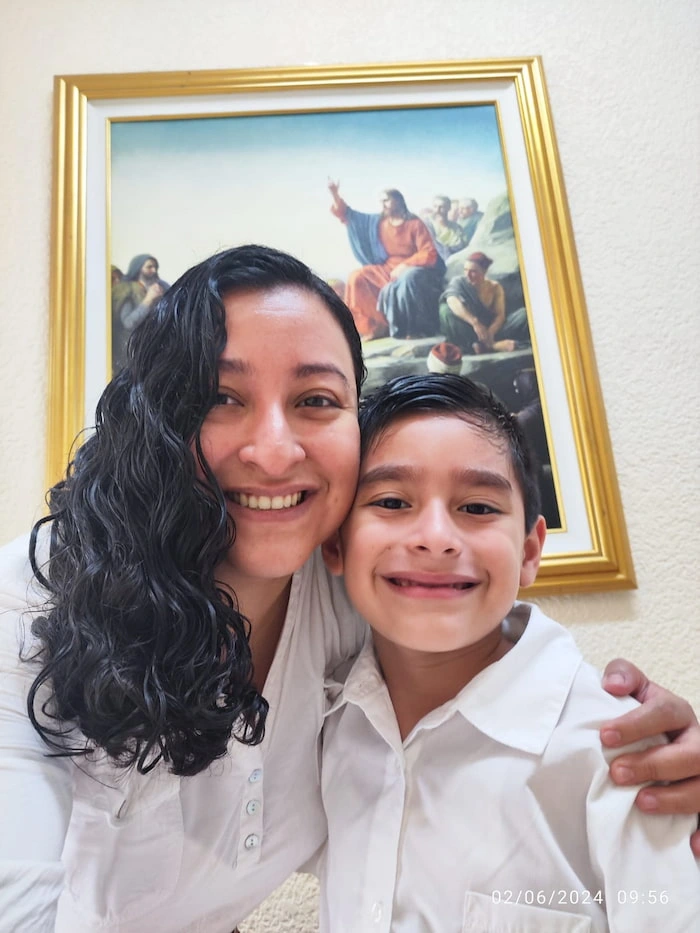

Home
About Me
My name is Rosa Posadas. I am studying software development through BYU-Pathway and BYU-Idaho. I am learning how to build responsive and dynamic websites using HTML, CSS, and JavaScript. I have experience teaching English and I am a dedicated educator who deeply believes in the transformative power of learning. I am passionate about helping others grow, discover their potential, and develop the confidence to communicate in a new language. Teaching has allowed me to connect with students of all ages, understand their unique learning styles, and design meaningful lessons that inspire curiosity and enjoyment. I love exploring new cultures, ideas, and perspectives, as they enrich both my personal and professional life. My classroom is a place where creativity and innovation come together—where digital tools, engaging activities, and thoughtful strategies turn learning into an exciting adventure. Whether I am designing interactive materials, creating bilingual resources, or guiding students through real-life language use, I always aim to make every experience memorable and enjoyable.
Student Photo
